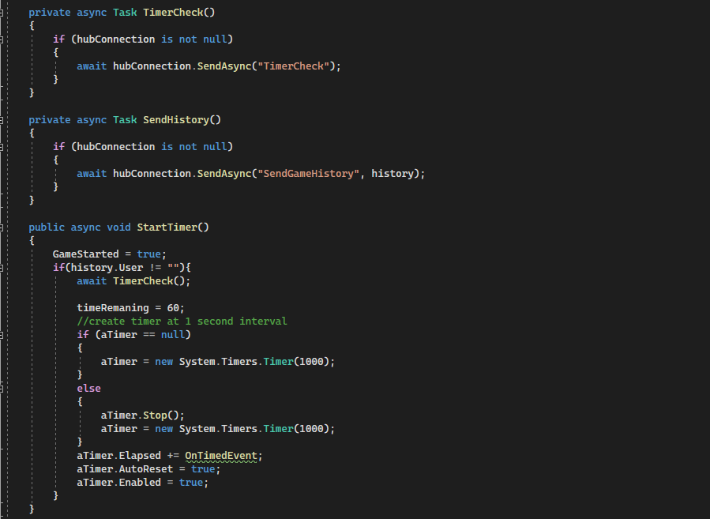

Word Finder Game Details

In this game you find words with letters that are touching the current letter. In this game you can play against multiple different users at the same time using signal r through .net. Once the users have entered their username and select start, the game would begin. The game utiziles an api to check if the word is real and if it is real the user gets points. Messages are shown when each user scores a word. When the game is over, it shows everyone's scores and the words they found during the game.
In this code snippet, you can see how the timer was set up and how we are using an async method to check if the timer should begin to all the users. As well you can see the async call to send all the users what word each user had selected. Both of these are sent through signal r through our .net code.